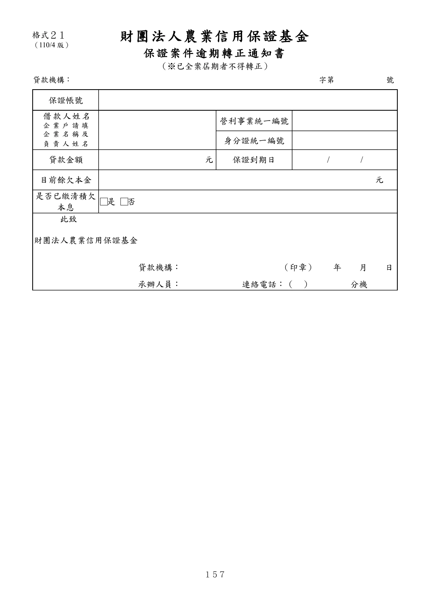

格式 21：保證案件逾期轉正通知書
手冊頁：157 PDF頁：169／203

查看PDF文字層
下列文字取自PDF既有文字層，僅供搜尋、複製與無障礙輔助。複雜表格的欄列位置可能失真，正式內容請以原頁預覽或PDF為準。
財團法人 農業信用保證基金 保證案件逾期轉正通知書 （※已全案屆期者不得轉正） 貸款機構： 字第 號 保證帳號 借款人姓 名 企業戶請 填 企業名稱 及 負責人姓 名 營利事業統一編號 身分證統一編號 貸款金額 元 保證到期日 / / 目前餘欠本金 元 是否已繳清積欠 本息 □是 □否 此致 財團法人農業信用保證基金 貸款機構： （印章） 年 月 日 承辦人員： 連絡電話：（ ） 分機 格式２１ （110/4版）